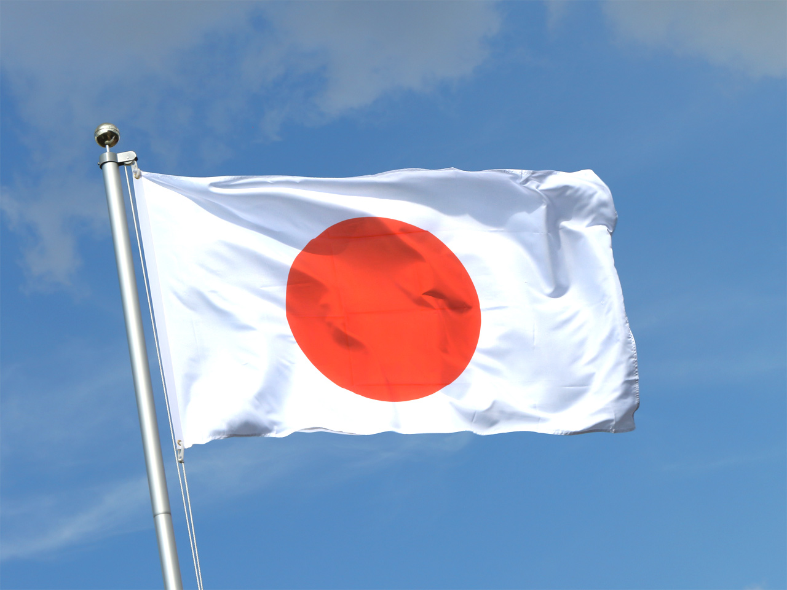
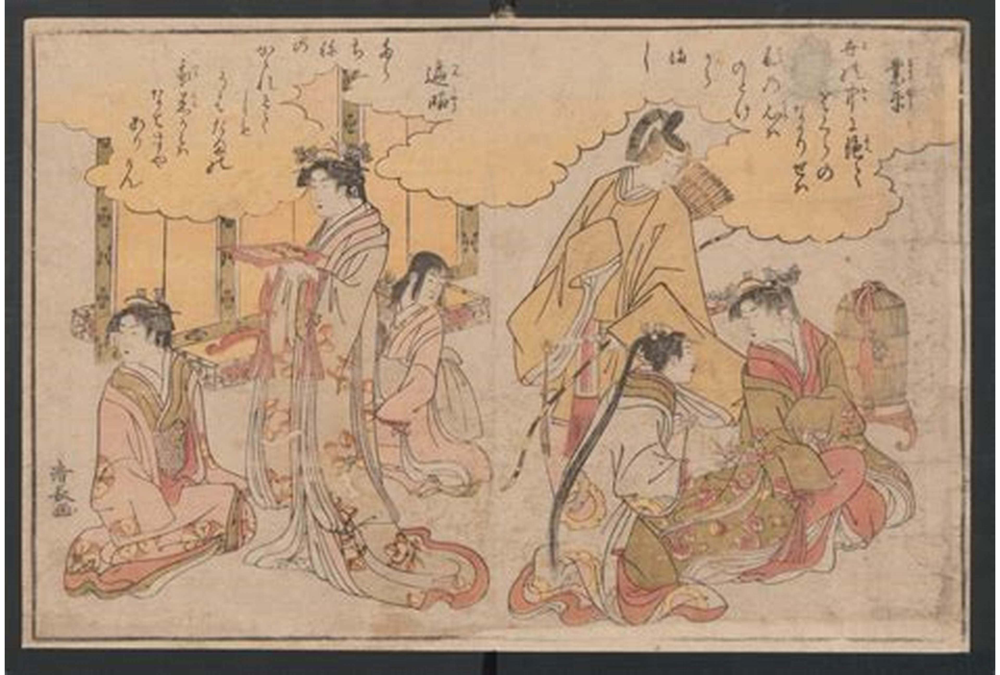
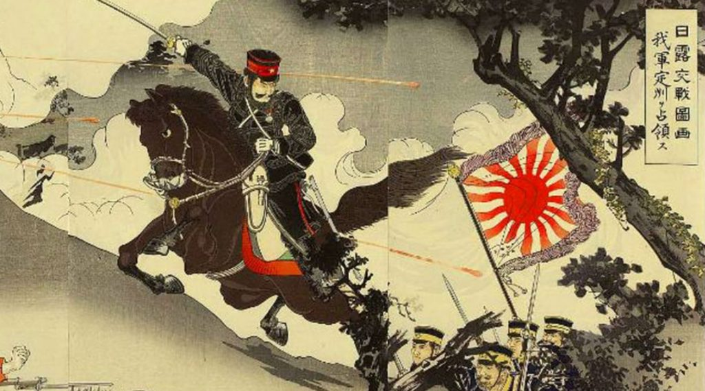
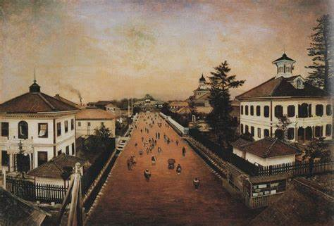
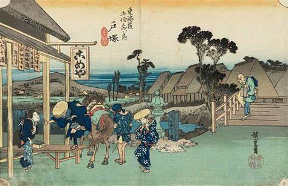

Japón |
|
|---|---|
| Index Cultura de Japon Monumentos de Japon Leyendas de Japón Sitios Turisticos | |
Detalles del País:Antecedentes de Japón |  |
Historia: |
|
Importancia de la Historia Japonesa:Comprender la historia japonesa es esencial para comprender la historia mundial. Japón es una potencia mundial que ha tenido una enorme influencia en Asia y continúa desempeñando un papel fundamental en los asuntos mundiales en los tiempos modernos. El impacto de Japón más allá de sus fronteras se sigue sintiendo como miembro de las Naciones Unidas y como potencia manufacturera. |
 |
Historia de Japón:La historia de Japón abarca miles de años y comienza en algún momento del Paleolítico. Los primeros pueblos de Japón fueron cazadores-recolectores que se cree que llegaron a través de puentes terrestres sumergidos hace mucho tiempo desde Asia continental. Esto ocurrió durante el período Arcaico/Paleolítico de Japón, que fue de alrededor del 50.000 a.C. al 12.000 a.C. A lo largo de los siglos, desde la antigüedad hasta la actualidad, los japoneses han conservado su cultura distintiva mientras tomaban prestada tecnología e ideologías de otras culturas y las adaptaban a sus necesidades. |
 |
¿Cuándo se fundó Japón?:La mitología japonesa atribuye la fundación de Japón al reinado del emperador Jimmu en el siglo VII a. C., quien estableció un reino en la provincia de Yamato. El pueblo japonés creía que el emperador Jimmu era descendiente del kami más elevado, la Diosa del Sol Amaterasu. Al emperador Jimmu también se le atribuye el establecimiento de la dinastía Yamato, que más tarde se convirtió en la dinastía gobernante de todo Japón y continúa gobernando hasta el día de hoy. Los emperadores continúan afirmando ser descendientes de la Diosa del Sol Amaterasu. |
 |
Japón antiguo:El antiguo Japón estaba organizado en clanes que competían por el control y el poder; sin embargo, estaban abiertos a nuevas ideas. China y Corea comenzaron a ejercer cierta influencia en la cultura japonesa durante este período. El pueblo japonés adoptó un sistema de escritura similar al de China y Corea, las enseñanzas de Buda se compartieron con el pueblo japonés y la ideología confuciana impactó al pueblo japonés en su transición a un gobierno imperial central. La filosofía confuciana enfatizó la importancia de la comunidad sobre el individualismo y el valor de la educación, y postuló que no se puede esperar un buen comportamiento de las personas si no satisfacen sus necesidades básicas. Esta filosofía sigue siendo una parte integral de la cultura japonesa. Durante este período, florecieron las artes en todas sus formas, incluida la caligrafía, la poesía, la pintura y otras formas de expresión cultural artística. Los siguientes son eventos y desarrollos notables asociados con el antiguo Japón. |
 |
| Todos los derechos reservados 2025 | |